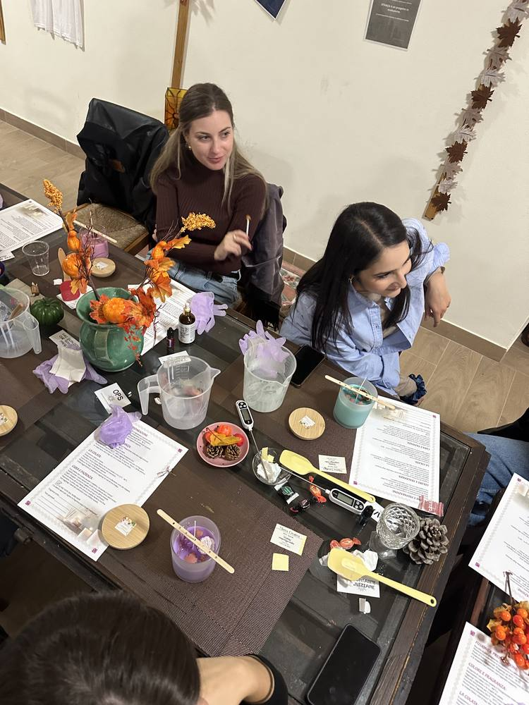
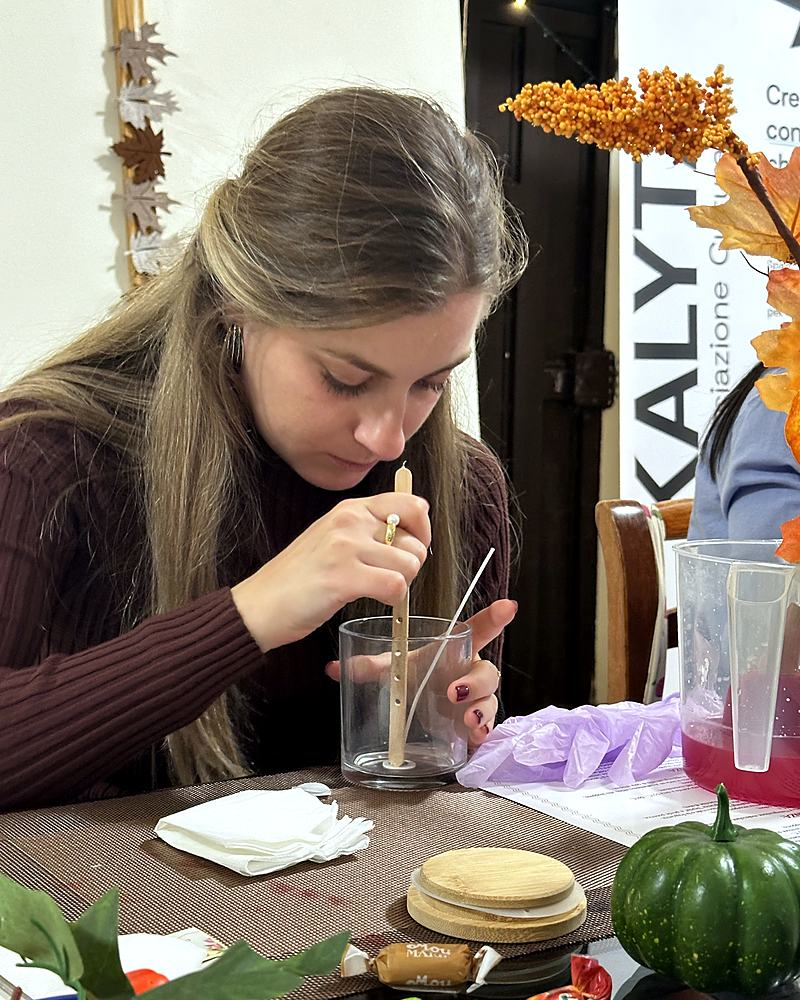

Pittura creativa
Ognuno ha la sua tela e i suoi colori, intorno allo stesso tavolo. Non servono basi: si parte da un tema scelto insieme.
KALYTA PRIVATE
Pittura, candele o cucito, in un giorno scelto da voi. Lo prepariamo a STANZA, il nostro spazio a Isola di Capo Rizzuto.
Va bene per un compleanno, un addio al nubilato, una serata tra amici o tra colleghi. Anche senza un'occasione.
Scriveteci ↓
COME FUNZIONA
Ci dite quanti siete, quale laboratorio vi incuriosisce e più o meno quando. Vi rispondiamo con le date libere e il contributo a persona.
Il giorno stabilito trovate il tavolo apparecchiato e i materiali pronti, e una persona di Kalyta che vi segue dall'inizio alla fine.
I LABORATORI
Ognuno ha la sua tela e i suoi colori, intorno allo stesso tavolo. Non servono basi: si parte da un tema scelto insieme.
Con le macchine da cucire si realizza un oggetto semplice, ad esempio una tote bag. Vi seguiamo passo per passo, anche se è la prima volta.


Si scelgono cera, colori ed essenze e si prepara una candela a testa, da portare via a fine serata.
ALTRE PROPOSTE
Nel calendario Kalyta ogni mese ci sono laboratori nuovi, come gioielli fatti a mano o il Gin Lab. Se ne avete visto uno che vi piace, possiamo riproporlo per voi.
Guarda il calendario →DOVE
Via degli Apostoli 16, Isola di Capo Rizzuto. Il tavolo lungo è fatto apposta per lavorare in gruppo. Se siete in tanti, ne parliamo e troviamo la soluzione. Apri in Google Maps →

SCRIVETECI
Non serve aver già deciso tutto. Compilate quello che sapete: si apre WhatsApp con il messaggio pronto e vi rispondiamo con date e contributo.